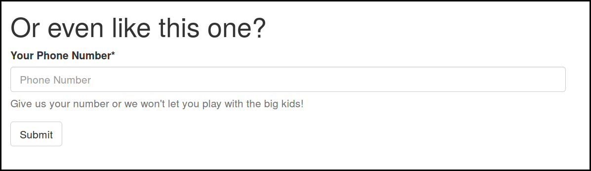
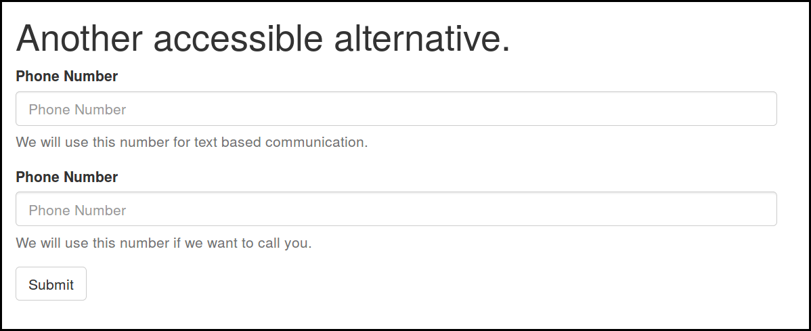

The more accessible way to ask for a phone number
This project consists of a small demo showing the problems and suggesting some solutions. I talked about this in my very first lighting talk ever at Djangocon Europe 2017.
You can view the demo here, and find the source code here.
introduction
Over the years phones have become a more versatile mode of communication than they used to be. We use them both for oral and text based communication (and have been doing so for a while now).
And although there are a lot of people who can (or prefer to) use only one of both forms of communication (oral or written), when we ask for phone numbers in analog or digital forms, we often don’t give the form filler the chance to tell us for which way we can use it. This creates barriers that could easily be avoided.
As an autistic who is very bad at phonecalls, I often find myself putting “000 000 000” or some less obvious fake phone number in those fields. (The company’s own phone number for example.) Even if I think the reason why they want my phone number is valid, I need to figure out how probable it is they are going to call me, and give the phone number of a friend instead if that probability is too high. In which case of course I also need to inform the friend in question. A lot of fuss for a single form field, but it could also be done differently!
How not to ask for a phone number
As always when creating forms, the first thing you should do before adding a phone number field to your form, is asking yourself whether you really need this. Think about usecases where you will need this number, and how probable it is that they will happen.
There is almost never a reason to make a phone number obligatory, so unless you really think your form is the exception, don’t! You don’t really need a phone number to inform people of last minute changes of your event. It’s up to them to decide about that. You can always write them an email instead.

You certainly don’t need the user’s phone number to be able to call them and tell them more about your product. Put the information on your website, have your contact data visible there as well, or write them an Email. You’re not going to convince anyone who cannot handle being called for whatever reason by calling them.
Two more accessible alternatives
If you need the user’s phone number, be sure to always clearly state what you are going to use it for (and keep your promise). Text messages for authentication and calling in case an emergency are two valid, but totally different reasons to ask for a phone number. By stating your intent clearly you help the user decide and gain their trust.

If you will use the phone number in more than one way, adding checkboxes allowing the user to decide which type of usage they are ok with is a good idea. This can be as rough as “it is ok to call this number”, “it is ok to text this number”, or something more detailed. The important thing here is that you not only ask for this extra information in the form, but also transfer it together with the phonenumber to any system or person who is going to use it.
For a support group I am in, I added the choices ‘calling allowed’, ‘calling in emergencies allowed’ and ‘text-based only’ to the groups phone list. This change had a huge effect on the amount of people that were prepared to share their phone number.

Another way of asking for a phone number that is less pressuring than the standard one field, is having two fields. One for calling and one for text based communication. This way users can put in a friend or relatives number if they are not comfortable with one of the communication methods themselves.
Which of the above methods works best depends on the specific situation. But any of them will make your phone number field more accessible for those with specific communication related disabilities or preferences. Try it next time you implement a phone number field!
Categories: Autism Programming